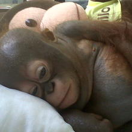
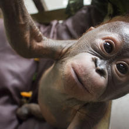
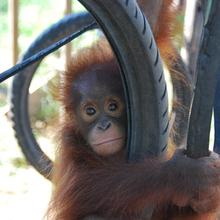
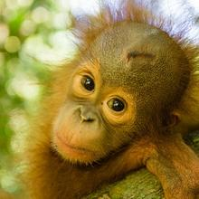
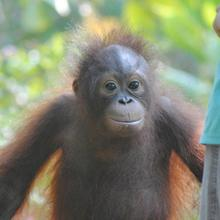
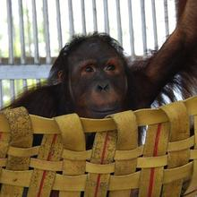
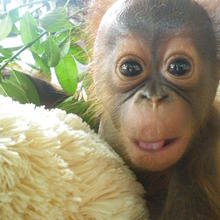
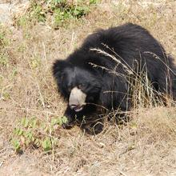
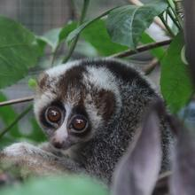

Animal Adoptions make fantastic gifts for all your friends and family.
Many rainforest animals are threatened by habitat loss and over-exploitation. Animal adoptions make a positive difference by supporting vital education and conservation work and by helping to ensure that the animals at The Living Rainforest receive the best care possible. Animal adoptions also help support our participation in international breeding programmes for threatened species.
Some animals stay with us forever and depend on us for lifelong care because they are no longer able to fend for themselves. By adopting one or more of the permanent members of our family, you can help us keep them healthy, happy and safe and support our work rescuing and rehabilitating other animals too. In return, you'll become a special friend to an animal in need.
Please Choose an animal to adopt.
If you want to adopt an animal, please fill the adoption form in Get Involved Page.
The fee to adopt one animal for 12 months is £40.

Budi's condition was extremely critical on arrival at the centre. Budi had spent more than 10 months in a chicken cage, and was only fed condensed milk, so he presented signs of severe malnutrition. His body was swollen up with fluid owing to the lack of protein.

Gito was less than five months old when our rescue team found him in 2015. He had been dumped in a filthy cardboard box and left to die. It took round the clock care and determination from our vets, but they never gave up and thankfully Gito survived.Your adoption today will help Gito on his road to recovery.

Monti arrived at the centre at the end of November 2009. It had taken our rescue team several days to track her down after forestry officers had alerted us to her existence.

Perhaps it was the wound to her head or maybe it was her size that made Rickina melt the hearts of our team in Indonesia the moment they clapped eyes on her.

Joyce arrived at our Orangutan Rescue and Rehabilitation centre in Ketapang, West Borneo in January 2013.

When we first found JoJo his condition moved our team to tears. He was found chained up on a pallet, living over an open sewer choked with human waste. Fed on scraps by his owners, he was just skin and bone, his body bent and weak from a lifetime in captivity.

Gunung arrived at our orangutan rescue centre in Ketapang, West Borneo on 3 November 2011. He was estimated to be just two or three months old, so the little one had been separated from his mother at a very young age.Gunung was extremely skinny and his weight was just over 2kg when he arrived.

From as little as 14p a day you can make a difference to the hundreds of bears we rescued from the misery of the dancing bear trade. Not only that, but you will be helping us fight the illegal wildlife trade, protecting wild bears from being snatched and sold for food, medicine and entertainment. Your support will make a real difference.

Our primate rescue centre is set in Ciapus, on the island of Java. The centre is the only one in Indonesia to specialise in the rescue and rehabilitation of slow lorises. Our goal is to return as many slow lorises to the wild as possible. A number of lorises with their teeth intact have been released wearing radio collars and are being closely monitored by the team.